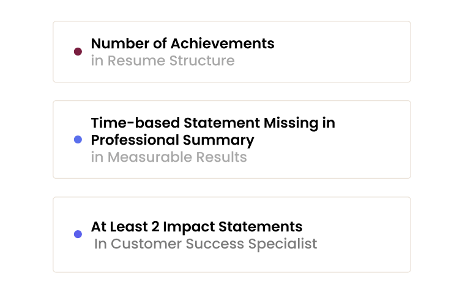
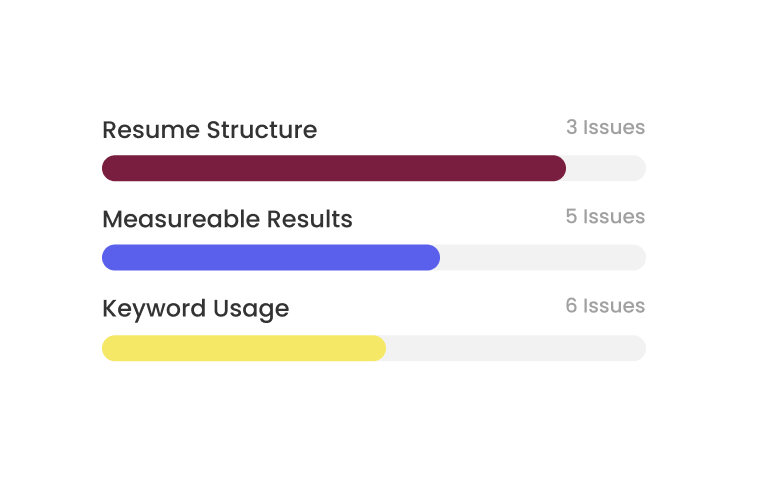

Resume Insights to Strengthen Your Next Application

Quickly Uncover Key Gaps in Your Resume
Get a detailed breakdown of the existing issues with your resume, and how to fix them.

Check Your Resume for Quality Issues & Misalignments
Ensure that your resume is aligned with best practices for presenting your skills and qualifications.

Find Ways to Enhance Key Sections of Your Resume
Get recommendations to strengthen crucial parts of your resume and increase your chances of success.